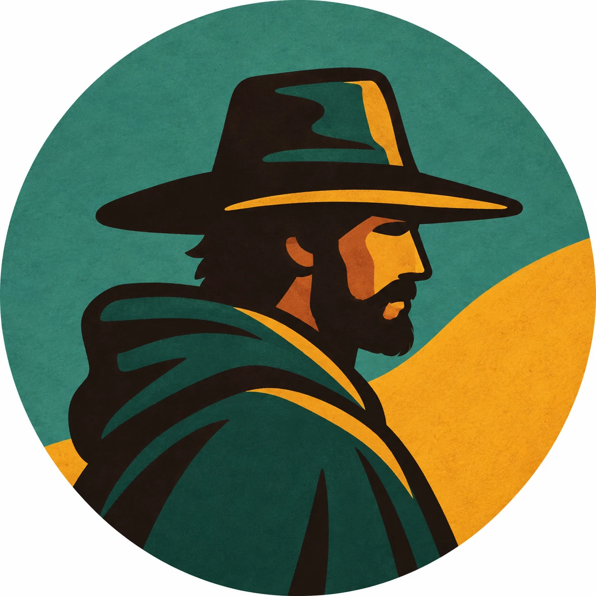

Arqueologia
Apostila
Sumérios: a civilização de barro
Numa planície sem pedra, entre o Tigre e o Eufrates, surgiram alguns dos primeiros centros urbanos de que há notícia, a escrita e a lei escrita.
Numa planície sem pedra, entre o Tigre e o Eufrates, surgiram alguns dos primeiros centros urbanos de que há notícia, a escrita e a lei escrita.

Os 500 anos de uma montanha boliviana cuja prata, a partir de 1545, mudou a economia mundial.

As ânforas da baía de Guanabara e as três versões de uma descoberta que nunca foi comprovada.
30 min
Arqueologia
35 min
Debunking
25 min

Documentários de 25 a 40 minutos sobre história, mitologia, arqueologia e civilizações. Cada vídeo parte de fontes acadêmicas e é contado em tom de conversa.